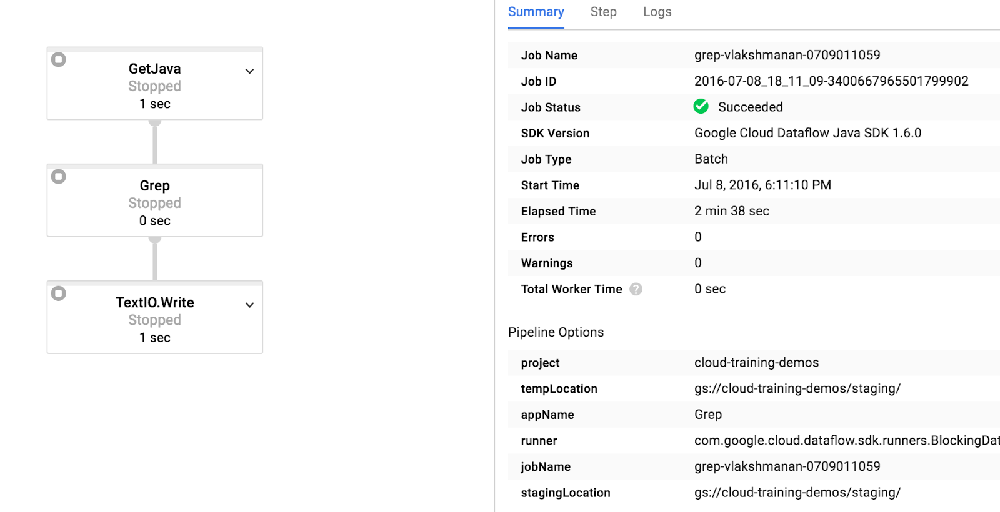

Dataflow is the Google's autoscaling, serverless way of processing both batch and streaming data, a fully-managed cloud version of Apache Beam (Batch & Stream) on Google Cloud Plateform (GCP).
This tutorial is about learning tools for reproducibility of data processing.
It covers a basic introduction of what Dataflow can do and how to operationalize your local data preparation to build a scalable dat a processing workflow on Google Cloud.
In this tutorial you will learn to do the following:
You will need a python environment for going through this tutorial. For example:
conda create -n env_beam python=2.7
conda activate env_beam
You will need the Python package manager pip which can be installed with:
sudo apt install python-pip
pip install -U pip
Then Dataflow and Oauth2 to authenticate to your GCP account. They can be installed as Python packages:
pip install google-cloud-dataflow oauth2client==3.0.0`
Finally another dependency:
pip install --force six==1.10 # downgrade as 1.11 breaks apitools`
>>> import apache_beam as beam
>>> [3, 8, 12] | beam.Map(lambda x : 3*x)
# [9, 24, 36]
>>> [("Jan",3), ("Jan",8), ("Feb",12)] | beam.GroupByKey()
[('Jan', [3, 8]), ('Feb', [12])]
>>> [("Jan",3), ("Jan",8), ("Feb",12)] | beam.GroupByKey() | beam.Map(lambda (mon,days) : (mon,len(days)))
[('Jan', 2), ('Feb', 1)]
Let's start with a simple sequence of tasks for which we will use Apache Beam. This section is actually a summary of this Google codelabs.
Here we will:
Get data from some files from GitHub:
wget https://github.com/GoogleCloudPlatform/training-data-analyst/archive/master.zip
Then navigate to this folder training-data-analyst-master/courses/data_analysis/lab2/python/:
cd master/training-data-analyst-master/courses/data_analysis/lab2/python/
What about dealing with a few java files:
$ ls -1 ../javahelp/src/main/java/com/google/cloud/training/dataanalyst/javahelp/*.java | xargs -L1 wc -l
58 ../javahelp/src/main/java/com/google/cloud/training/dataanalyst/javahelp/Grep.java
129 ../javahelp/src/main/java/com/google/cloud/training/dataanalyst/javahelp/IsPopular.java
212 ../javahelp/src/main/java/com/google/cloud/training/dataanalyst/javahelp/JavaProjectsThatNeedHelp.java
109 ../javahelp/src/main/java/com/google/cloud/training/dataanalyst/javahelp/StreamDemoConsumer.java
ls -1 ../javahelp/src/main/java/com/google/cloud/training/dataanalyst/javahelp/*.java | xargs -L1 wc -l
Here is Google's first example,
grep.py:
#!/usr/bin/env python
"""
Copyright Google Inc. 2016
Licensed under the Apache License, Version 2.0 (the "License");
you may not use this file except in compliance with the License.
You may obtain a copy of the License at
http://www.apache.org/licenses/LICENSE-2.0
Unless required by applicable law or agreed to in writing, software
distributed under the License is distributed on an "AS IS" BASIS,
WITHOUT WARRANTIES OR CONDITIONS OF ANY KIND, either express or implied.
See the License for the specific language governing permissions and
limitations under the License.
"""
import apache_beam as beam
import sys
def my_grep(line, term):
if line.startswith(term):
yield line
if __name__ == '__main__':
p = beam.Pipeline(argv=sys.argv)
input = '../javahelp/src/main/java/com/google/cloud/training/dataanalyst/javahelp/*.java'
output_prefix = '/tmp/output'
searchTerm = 'import'
# find all lines that contain the searchTerm
(p
| 'GetJava' >> beam.io.ReadFromText(input)
| 'Grep' >> beam.FlatMap(lambda line: my_grep(line, searchTerm) )
| 'write' >> beam.io.WriteToText(output_prefix)
)
p.run().wait_until_finish()
what it does:
ReadFromText all input files in .../dataanalyst/javahelp/*.javaGrep every line of each file for a searchTerm, here using searchTerm = 'import'WriteToText in a given folder: output_prefix = '/tmp/output'wait_until_finish.Notice the 3 respective transforms in the pipeline: GetJava, Grep and write.
Execute this Beam pipeline simply by running this Python file: python grep.py
$ ls /tmp/output*
ls: cannot access '/tmp/output*': No such file or directory
$ python grep.py
$ ls /tmp/output*
/tmp/output-00000-of-00001
$
Which produced:
$ cat /tmp/output-00000-of-00001
import java.util.ArrayList;
import java.util.Collections;
import java.util.List;
import java.util.Map;
import com.google.api.services.bigquery.model.TableRow;
...
import org.apache.beam.sdk.transforms.Sum;
import org.apache.beam.sdk.transforms.Top;
import org.apache.beam.sdk.values.KV;
$
Let's do that programmatically:
../gcloud_gsutil/00_create_service_account.sh$ gsutil ls
gs://demo-bucket-patrick/
gs://iris_models/
gs://pme-cx/
$
$ BUCKET_NAME="demo-bucket-patrick"
$
$ gsutil cp ../javahelp/src/main/java/com/google/cloud/training/dataanalyst/javahelp/*.java gs://${BUCKET_NAME}/javahelp
Copying file://../javahelp/src/main/java/com/google/cloud/training/dataanalyst/javahelp/Grep.java [Content-Type=text/x-java]...
Copying file://../javahelp/src/main/java/com/google/cloud/training/dataanalyst/javahelp/IsPopular.java [Content-Type=text/x-java]...
Copying file://../javahelp/src/main/java/com/google/cloud/training/dataanalyst/javahelp/JavaProjectsThatNeedHelp.java [Content-Type=text/x-java]...
Copying file://../javahelp/src/main/java/com/google/cloud/training/dataanalyst/javahelp/StreamDemoConsumer.java [Content-Type=text/x-java]...
| [4 files][ 16.7 KiB/ 16.7 KiB]
Operation completed over 4 objects/16.7 KiB.
$
PROJECT_ID and BUCKET_NAME.#!/usr/bin/env python
"""
Copyright Google Inc. 2016
Licensed under the Apache License, Version 2.0 (the "License");
you may not use this file except in compliance with the License.
You may obtain a copy of the License at
http://www.apache.org/licenses/LICENSE-2.0
Unless required by applicable law or agreed to in writing, software
distributed under the License is distributed on an "AS IS" BASIS,
WITHOUT WARRANTIES OR CONDITIONS OF ANY KIND, either express or implied.
See the License for the specific language governing permissions and
limitations under the License.
"""
import apache_beam as beam
def my_grep(line, term):
if line.startswith(term):
yield line
PROJECT='pme-cx'
BUCKET='demo-bucket-patrick'
def run():
argv = [
'--project={0}'.format(PROJECT),
'--job_name=examplejob2',
'--save_main_session',
'--staging_location=gs://{0}/staging/'.format(BUCKET),
'--temp_location=gs://{0}/staging/'.format(BUCKET),
'--runner=DataflowRunner'
]
p = beam.Pipeline(argv=argv)
input = 'gs://{0}/javahelp/*.java'.format(BUCKET)
output_prefix = 'gs://{0}/javahelp/output'.format(BUCKET)
searchTerm = 'import'
# find all lines that contain the searchTerm
(p
| 'GetJava' >> beam.io.ReadFromText(input)
| 'Grep' >> beam.FlatMap(lambda line: my_grep(line, searchTerm) )
| 'write' >> beam.io.WriteToText(output_prefix)
)
p.run()
if __name__ == '__main__':
run()
Running it will give you:
$ python grepc.py
/home/patrick/anaconda3/envs/ml/lib/python2.7/site-packages/apache_beam/io/gcp/gcsio.py:176: DeprecationWarning: object() takes no parameters
super(GcsIO, cls).__new__(cls, storage_client))
Collecting apache-beam==2.5.0
Using cached https://files.pythonhosted.org/packages/c6/96/56469c57cb043f36bfdd3786c463fbaeade1e8fcf0593ec7bc7f99e56d38/apache-beam-2.5.0.zip
Saved /tmp/tmpqZhUbM/apache-beam-2.5.0.zip
Successfully downloaded apache-beam
Collecting apache-beam==2.5.0
Using cached https://files.pythonhosted.org/packages/ff/10/a59ba412f71fb65412ec7a322de6331e19ec8e75ca45eba7a0708daae31a/apache_beam-2.5.0-cp27-cp27mu-manylinux1_x86_64.whl
Saved /tmp/tmpqZhUbM/apache_beam-2.5.0-cp27-cp27mu-manylinux1_x86_64.whl
Successfully downloaded apache-beam

Succeeded. you can examine the output:$ gsutil ls gs://demo-bucket-patrick/javahelp/
gs://demo-bucket-patrick/javahelp/Grep.java
gs://demo-bucket-patrick/javahelp/IsPopular.java
gs://demo-bucket-patrick/javahelp/JavaProjectsThatNeedHelp.java
gs://demo-bucket-patrick/javahelp/StreamDemoConsumer.java
gs://demo-bucket-patrick/javahelp/output-00000-of-00004
gs://demo-bucket-patrick/javahelp/output-00001-of-00004
gs://demo-bucket-patrick/javahelp/output-00002-of-00004
gs://demo-bucket-patrick/javahelp/output-00003-of-00004
This example creates training/test datasets for a Machine Learning model using Dataflow.
While Pandas is fine for experimenting, it is better for the operationalization of your workflow to do the preprocessing in Beam/Dataflow. This will also help if you need to preprocess data on-the-fly, since Beam/Dataflow can also process streaming data.
This section is built from this great notebook by Lak Valliappa
In this section, you will:
Start by creating a new Python environment:
conda activate ml
pip uninstall -y google-cloud-dataflow
conda install -y pytz==2018.4
pip install apache-beam[gcp]
Create a Cloud Storage bucket
PROJECT='pme-cx'
BUCKET='cloud-training-demos-ml_02'
REGION='us-central1'
gsutil mb -l ${REGION} gs://${BUCKET}
The data is natality data (record of births in the US).
The goal is to:
# Create SQL query using natality data after the year 2000
query = """
SELECT
weight_pounds,
is_male,
mother_age,
plurality,
gestation_weeks,
ABS(FARM_FINGERPRINT(CONCAT(CAST(YEAR AS STRING), CAST(month AS STRING)))) AS hashmonth
FROM
publicdata.samples.natality
WHERE year > 2000
"""
pip install datalab
pip install --upgrade google-cloud-bigquery[pandas]
$ ipython
In [1]: import google.datalab.bigquery as bq
In [3]:
...: # Create SQL query using natality data after the year 2000
...: query = """
...: SELECT
...: weight_pounds,
...: is_male,
...: mother_age,
...: plurality,
...: gestation_weeks,
...: ABS(FARM_FINGERPRINT(CONCAT(CAST(YEAR AS STRING), CAST(month AS STRING)))) AS hashmonth
...: FROM
...: publicdata.samples.natality
...: WHERE year > 2000
...: """
In [4]: df = bq.Query(query + " LIMIT 100").execute().result().to_dataframe()
...: df.head()
...:
Out[4]:
weight_pounds is_male mother_age plurality gestation_weeks hashmonth
0 8.818490 False 17 1 42 1403073183891835564
1 8.141671 False 29 1 38 8904940584331855459
2 5.948072 True 38 1 38 7108882242435606404
3 8.838332 True 27 1 39 3408502330831153141
4 9.259415 True 28 1 38 1088037545023002395
In [5]:
Let's use Cloud Dataflow to read in the BigQuery data, do some preprocessing, and write it out as CSV files.
Instead of using Beam/Dataflow, I had three other options:
However, in this case, I want to do some preprocessing: modifying data so that we can simulate what is known if no ultrasound has been performed.
If I didn't need preprocessing, I could have used the web console. Also, I prefer to script it out rather than run queries on the user interface, so I am using Cloud Dataflow for the preprocessing.
Apache Beam script:
DataFlow_Baby_weight.py.
Note that after you launch the script above, the actual processing is happening on the cloud. Go to the GCP webconsole to the Dataflow section and monitor the running job. It took about 20 minutes for me.
Finally download the generated .csv files:
gsutil ls gs://${BUCKET}/babyweight/preproc/*-00000*
Preprocessing using tf.transform and Dataflow: Use the flexibility and scalability of Beam for doing your data processing, and use TensorFlow Transforms for its efficiency.
TensorFlow Transforms is a hybrid between Apache Beam and TensorFlow, able to process Beam data transformation on the TensorFlow stack, able to use different hardware (CPUs, GPUs, TPUs).
In addition to worker resource usage (that are really cheap), a job might consume the following resources, each billed at their own pricing, including but not limited to
Use gsutil:
BUCKET_NAME="my-cool-bucket"
# You can remove a Cloud Storage bucket by invoking the following command:
gsutil rb gs://${BUCKET_NAME}
According to Google Best practices, deleting BigQuery data is useful if you only work on the most recent data. It is also useful if you are experimenting with data and do not need to preserve it.
If your tables are partitioned by date, the dataset's default table expiration applies to the individual partitions. You can also control partition expiration using the time_partitioning_expiration flag in the CLI or the expirationMs configuration setting in the API. For example, the following command would expire partitions after 3 days:
bq mk --time_partitioning_type=DAY --time_partitioning_expiration=259200 [DATASET].[TABLE]
Here are a few references to read or watch: